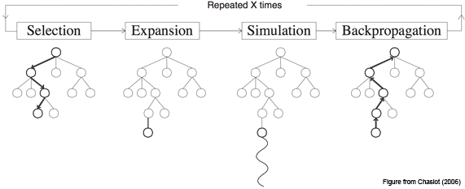

What is MCTS?
Monte Carlo Tree Search (MCTS) is a method for making optimal decisions in artificial intelligence (AI) problems, typically move planning in combinatorial games. It combines the generality of random simulation with the precision of tree search.
Research interest in MCTS has risen sharply due to its spectacular success with computer Go and potential application to a number of other difficult problems. Its application extends beyond games, and MCTS can theoretically be applied to any domain that can be described in terms of {state, action} pairs and simulation used to forecast outcomes.
Basic Algorithm
The basic MCTS algorithm is simple: a search tree is built, node by node, according to the outcomes of simulated playouts. The process can be broken down into the following steps.

1. Selection
Starting at root node R, recursively select optimal child nodes (explained below) until a leaf node L is reached.
2. Expansion
If L is a not a terminal node (i.e. it does not end the game) then create one or more child nodes and select one C.
3. Simulation
Run a simulated playout from C until a result is achieved.
4. Backpropagation
Update the current move sequence with the simulation result.
See the Tutorial page for an example of this process in action.
Each node must contain two important pieces of information: an estimated value based on simulation results and the number of times it has been visited.
In its simplest and most memory efficient implementation, MCTS will add one child node per iteration. Note, however, that it may be beneficial to add more than one child node per iteration depending on the application.
Node Selection
Bandits and UCB
Node selection during tree descent is achieved by choosing the node that maximises some quantity, analogous to the multiarmed bandit problem in which a player must choose the slot machine (bandit) that maximises the estimated reward each turn. An Upper Confidence Bounds (UCB) formula of the following form is typically used:
where vi is the estimated value of the node, ni is the number of the times the node has been visited and N is the total number of times that its parent has been visited. C is a tunable bias parameter.
Exploitation vs Exploration
The UCB formula balances the exploitation of known rewards with the exploration of relatively unvisited nodes to encourage their exercise. Reward estimates are based on random simulations, so nodes must be visited a number of times before these estimates become reliable; MCTS estimates will typically be unreliable at the start of a search but converge to more reliable estimates given sufficient time and perfect estimates given infinite time.
MCTS and UCT
Kocsis and Szepervari (2006) first formalised a complete MCTS algorithm by extending UCB to minimax tree search and named it the Upper Confidence Bounds for Trees (UCT) method. This is the algorithm used in the vast majority of current MCTS implementations.
UCT may be described as a special case of MCTS, that is: UCT = MCTS + UCB.
Benefits
MCTS offers a number of advantages over traditional tree search methods.
Aheuristic
MCTS does not require any strategic or tactical knowledge about the given domain to make reasonable decisions. The algorithm can function effectively with no knowledge of a game apart from its legal moves and end conditions; this means that a single MCTS implementation can be reused for a number of games with little modification, and makes MCTS a potential boon for general game playing.
Asymmetric
MCTS performs asymmetric tree growth that adapts to the topology of the search space. The algorithm visits more interesting nodes more often, and focusses its search time in more relevant parts of the tree.

This makes MCTS suitable for games with large branching factors such as 19x19 Go. Such large combinatorial spaces typically cause problems for standard depth- or breadth-based search methods, but the adaptive nature of MCTS means that it will (eventually) find those moves that appear optimal and focus its search effort there.
Anytime
The algorithm can be halted at any time to return the current best estimate. The search tree built thus far may be discarded or preserved for future reuse.
Elegant
The algorithm is simple to implement (see the Code).
Drawbacks
MCTS has few drawbacks, but they can be major.
Playing Strength
The MCTS algorithm, in its basic form, can fail to find reasonable moves for even games of medium complexity within a reasonable amount of time. This is mostly due to the sheer size of the combinatorial move space and the fact that key nodes may not be visited enough times to give reliable estimates.
Speed
MCTS search can take many iterations to converge to a good solution, which can be an issue for more general applications that are difficult to optimise. For example, the best Go implementations can require millions of playouts in conjunction with domain specific optimisations and enhancements to make expert moves, whereas the best GGP implementations may only make tens of (domain independent) playouts per second for more complex games. For reasonable move times, such GGPs may barely have time to visit each legal move and it is unlikely that significant search will occur.
Luckily, the performance of the algorithm can be sigificantly improved using a number of techniques.
Improvements
Dozens of MCTS enhancements have been suggested to date. These can generally be described as being either domain knowledge or domain independent.
Domain Knowledge
Domain knowledge specific to the current game can be exploited in the tree to filter out implausible moves or in the simulations to produce heavy playouts that are more similar to playouts that would occur between human opponents. This means that playout results will be more realistic than random simulations and that nodes will require fewer iterations to yield realistic reward values.
Domain knowledge can yield significant improvements, at the expense of speed and loss of generality.
Domain Independent
Domain independent enhancements apply to all problem domains. These are typically applied in the tree (e.g. AMAF) although again some apply to the simulations (e.g. prefer winning moves during playouts). Domain independent enhancements do not tie the implementation to a particular domain, maintaining generality, and are hence the focus of most current work in the area.
Context
1928: John von Neumann's minimax theorem paved the way for adversarial tree search methods that have formed the basis of decision making in computer science and AI almost since their inception.
1940s: Monte Carlo (MC) methods were formalised as a way to approach less well-defined problems unsuitable for tree search, through the use of random sampling.
2006: Rémi Coulomb and other researchers combined these two ideas to provide a new approach to move planning in computer Go now known as MCTS. Kocsis and Szepesvári formalised this approach into the UCT algorithm.
It seems remarkable that this elegant algorithm was not discovered much sooner!
Research Interest
There have been over 150 research papers written on topics related to MCTS since its inception a few years ago, averaging out to over one new publication every fortnight. These include some 50 suggested variations, enhancements and optimisations to the algorithm, which would not be far from the total number of enhancements suggested for traditional tree search since its introduction in 1928.
This new field of study is currently a hot research topic in AI, with many open research questions still to be addressed and answered.
MCTS: State of the Art
Imperial College London held the first international MCTS workshop in August 2010 on the theme of MCTS: State of the Art. Speakers included:
O. Teytaud, "State of the Art: What is MCTS, where is it now, and where is it going?” 2010 [Online]. Available: http://www.aigamesnetwork.org/_media/main:events:london2010.pdf
M. Müller, “Challenges in Monte Carlo Tree Search,” 2010 [Online]. Available: http://www.aigamesnetwork.org/_media/main:events:london2010-mcts-challenges.pdf
R. Hayward, “MoHex: Computer Hex world champion,” 2010 [Online]. Available: http://www.aigamesnetwork.org/_media/main:events:mohextalk.pdf
H. Finnsson and Y. Björnsson, “CadiaPlayer: MCTS in General Game Playing,” 2010 [Online]. Available: http://www.aigamesnetwork.org/_media/main:events:cadiaplayer_lic_slides_print.pdf
A. Rimmel, “Havannah, Monte Carlo Enhancements and Linear Transforms,” 2010 [Online]. Available: http://www.aigamesnetwork.org/_media/main:events:presmctsworkshop_rimmel.pdf